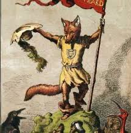

samenvatting
Alle karakters zijn dieren en Reijnart is hier een van. Reijnart is een vos en hiermee de titel “Reijnart de Vos.” Door het verhaal heen neemt Reijnart verschillende dieren op een listige manier te grazen.
In het begin proberen Bruun en Tibeert reijnaart terecht te zetten, maar die worden door Reijnaart betaald gezet. Grimbeert probeert Reijnaart ook terecht te zetten maar deze keer lukt het Reijnaart wel om te komen. Dit lukt wel omdat Grimbeert wel om dat Reijnaart anders vermoord zou worden.
Er wordt besloten dat Reijnaart opgehangen moet worden, maar zoals eerde lukt het hem weer te ontsnappen. Hij weet de koning en koningin in de maling te nemen. Hierdoor lukt het hem te onstsnappen. Het verhaal eindigt met reijnart die met zijn gezin op de vlucht gaat, hij heeft gelogen tegen de koning over een “schat,” maar deze heeft hij natuurlijk niet. Naast dit heeft hij ook Cuwaert opgegeten en vermoord.
Jelle Boekema, Berend Broesder
